Le Trio
-
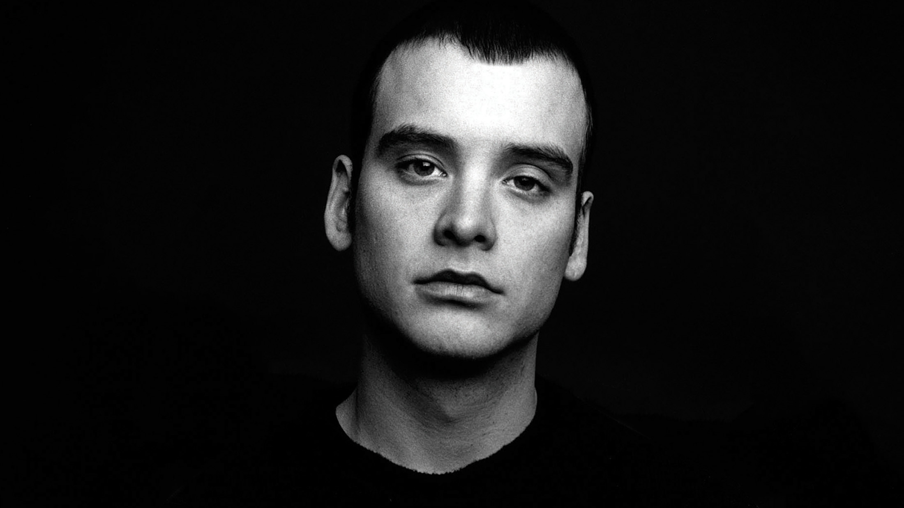
Matt Skiba, vocal et guitare
-
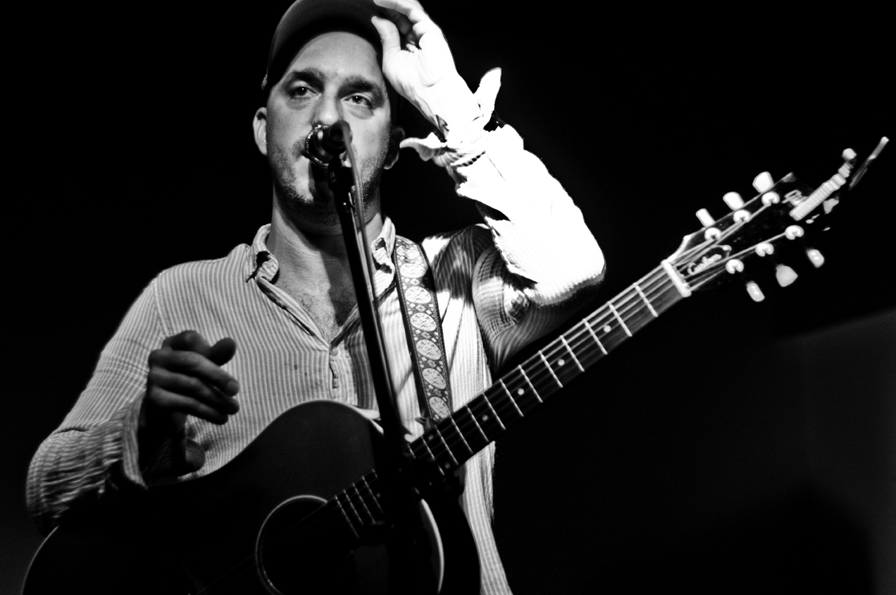
Dan Adriano, vocal et basse
-
Atom Willard, batterie
Discographie
Albums
- Goddamnit (1998) 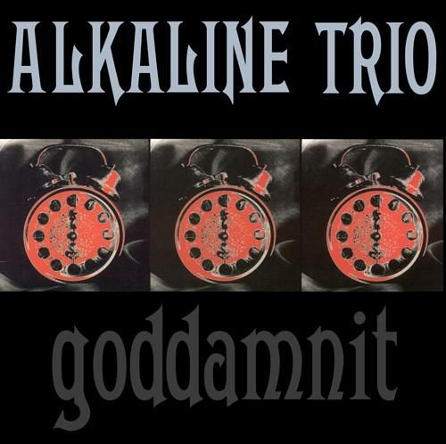
-
Maybe I'll Catch Fire (2000)

- From Here to Infirmary (2001) 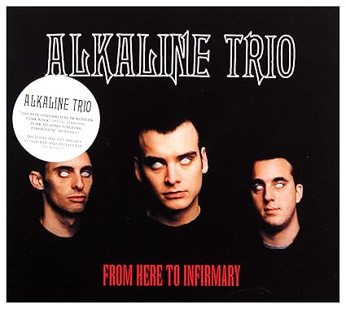
- Good Mourning (2003) 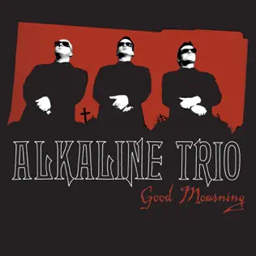
- Crimson (2005) 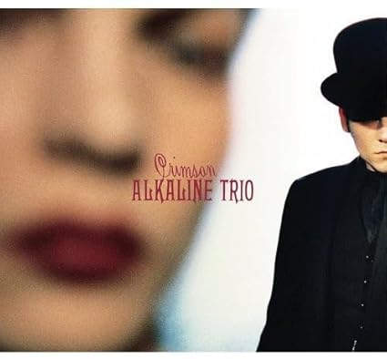
- Agony & Irony (2008) 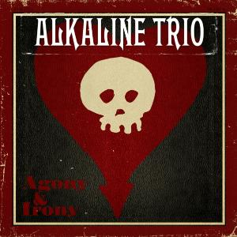
- This Addiction (2010) 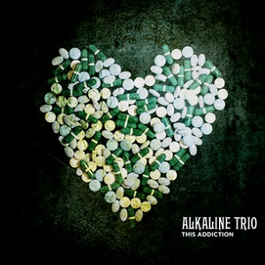
- My Shame is True (2013) 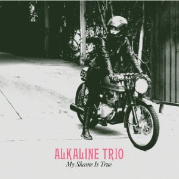
-
Is This Thing Cursed? (2018)
.jpg)
- Blood, Hair and Eyeballs (2024) 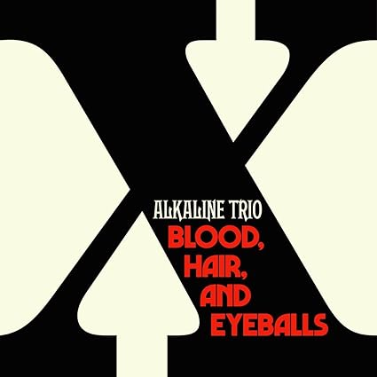
EPs
- For Your Lungs Only (1998) 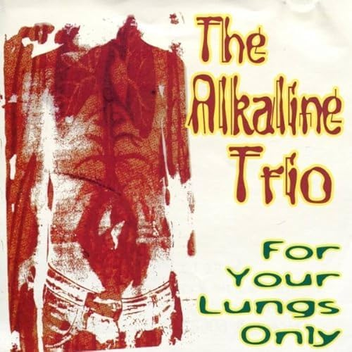
- I Lied My Face Off (1999) 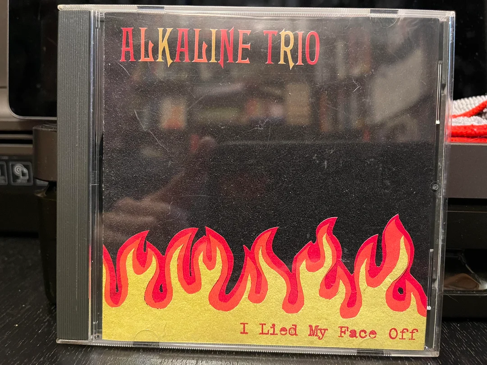
- Broken Wing (2013) 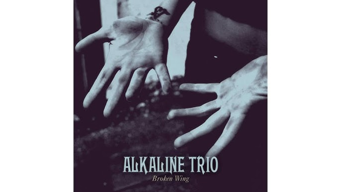
- E.P (2020) 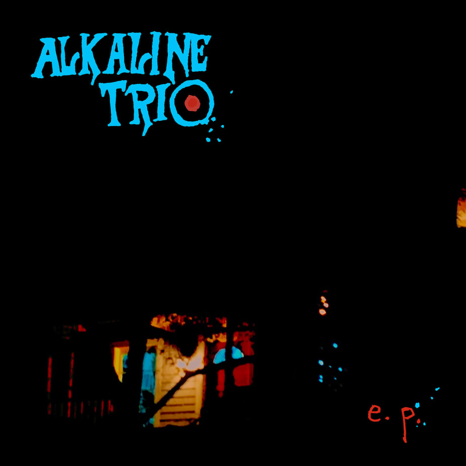
Compilations
-
Alkaline Trio (2000) -
Chanson vedette: "Snake Oil Tanker"
-
Remains (2007) -
Chanson vedette: "Queen of Pain"
Actualité
Actualités, informations et un peu plus sur le Trio.
- Nouveau single The Sacrifice/The Sickness: Disponible sur toutes les chaînes de streaming 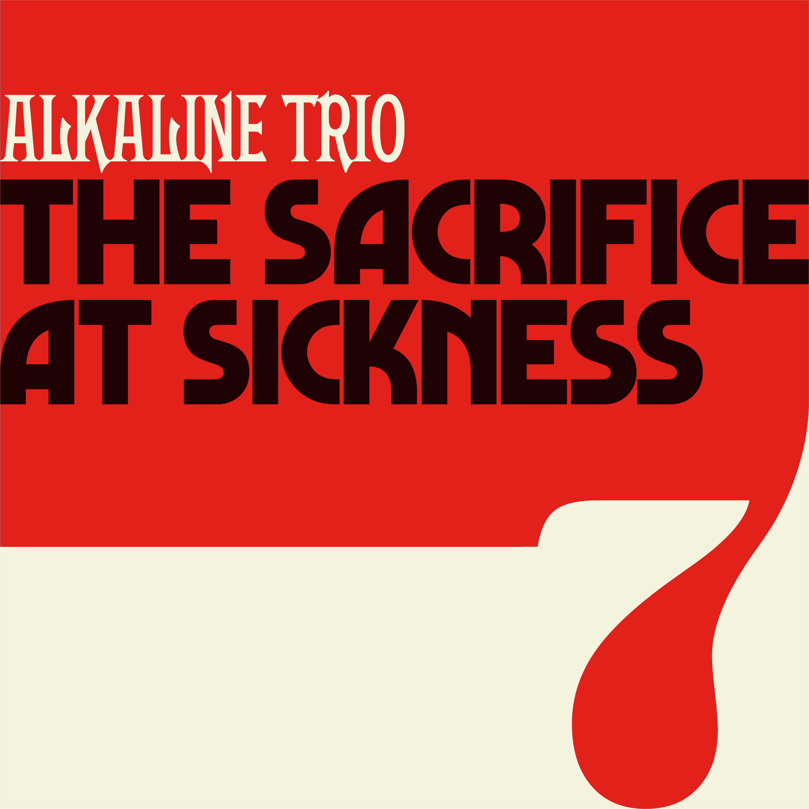
-
Le nouvel album est sorti! Blood, Hair and Eyeballs Le dixième album du trio est sorti et vous pouvez l'écouter ou l'acheter. Un album parfois nostalgique, mais avec des explorations sonores plus matures, c'est en gros ce que l'on peut entendre. Point culminant absolu pour les morceaux Break et Bad Time.
.jpg)
- Matt Skiba quitte Blink 182: Mauvaise nouvelle pour ceux qui ont adoré regarder et écouter Sbika sur Blink 182, mais le temps pour Skiba de se consacrer principalement au Trio est de retour. C'est officiel, le départ a été confirmé dans un communiqué sur leurs réseaux sociaux officiels de la part des membres de Blink mais aussi de Skiba lui-même. 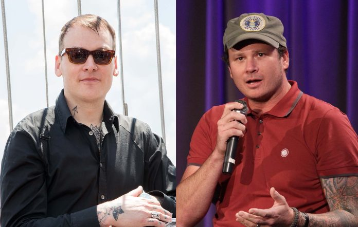
Europe Tour 2025
Dates à venir :
- 24/05/2025 Hatfield, UK
- 25/05/2025 Leeds, UK
- TBA Plus de dates bientôt
Photos et Vidéos
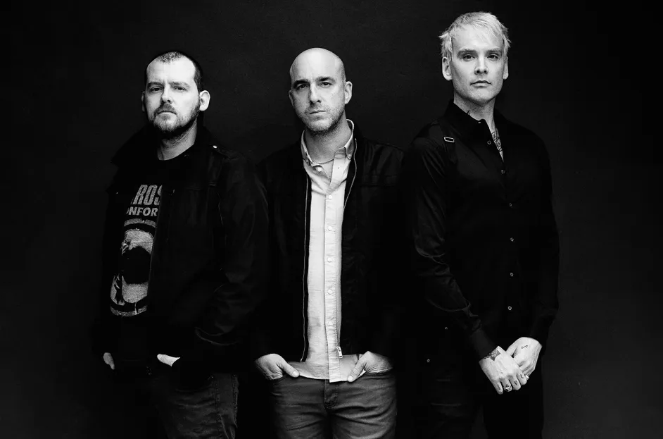
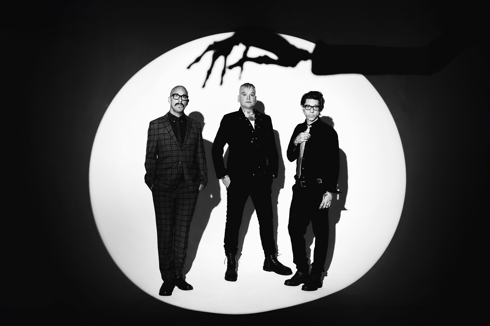
Fan Club
Communauté ouverte sur Facebook. Des gens sympas et des informations de qualité. Je recommande.
Contact
Contacter le développeur.
Réseaux sociaux